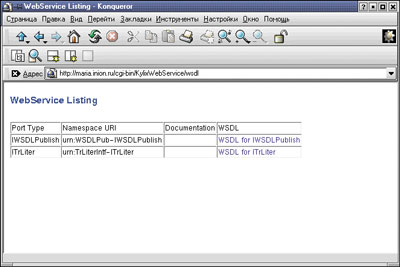

Мария Сысойкина
В последнее время активно обсуждаются вопросы использования достаточно новой технологии, называемой Web Services. Концепция Web-сервисов опирается на открытые стандарты SOAP и XML, что позволяет объединять разнородные системы, создавая распределенные Web-приложения. Использование XML позволяет говорить о том, что Web-сервисы полностью независимы от платформы и среды, в которой они реализованы.
Те, кто еще мало знаком со всеми аспектами концепции Web-сервисов, часто задаются вопросом: "А действительно ли реализация сервисов и клиентских приложений не зависит от платформы?". Да, действительно не зависит. В "BYTE/Россия" уже публиковались материалы, посвященные разработке Web-сервисов в таких средах, как Visual Studio .NET и VB + SOAP Toolkit 2.0 (см. № 9/2001, в частности, статью "Web-сервисы спасут мир?", в которой обсуждаются общие вопросы этой технологии). Однако в обоих случаях сервисы создаются на платформе Microsoft. Данная же статья посвящена разработке Web-сервисов и клиентских приложений в среде Linux, а точнее, с использованием последней версии Borland Kylix 2.
Но, прежде чем говорить о реализации Web-сервисов в Kylix, скажем несколько слов о новых базовых технологиях, реализованных в последней версии продукта.
Web-сервисы и Snap-технологии
В версии Kylix 2 компания Borland (http://www.borland.com) реализовала новое семейство технологий, названное Snap. На данный момент предлагаются три технологии из этого семейства, соответствующие трем уровням структуры приложений.
Самый нижний, базовый уровень представлен технологией DataSnap, которая по сути выступает логическим продолжением механизмов работы с XML, реализованных в предыдущих версиях Delphi и Kylix, в частности, механизма MyBase. Используя DataSnap API, разработчики смогут реализовать доступ к любым широко распространенным базам данных на основе SQL, поставляя информацию в XML-синтаксисе под управлением протокола SOAP. Доступ к базам данных предоставляется большому кругу клиентских программ, включая так называемые "тонкие клиенты" и Web-сервисы, причем разработка такого доступа оказывается намного дешевле, чем раньше.
Следующий уровень модели Snap, технология WebSnap, позволит значительно ускорить процесс разработки сложных Web-сайтов, предлагающих наряду с элементарным доступом к информации и более серьезные возможности. WebSnap позволяет объединить в едином процессе дизайнерскую работу и создание самой логики приложения. Кроме того, использование компонентов WebSnap позволяет отлаживать серверные приложения с помощью механизма WebSnap Debugging Web Server, который обеспечивает высокоуровневый мониторинг всех процессов взаимодействия, происходящих на сайте. В инструментарий WebSnap также входят серверные компоненты для реализации Web-страниц, предусматривающие написание сценариев на JavaScript.
Верхний уровень модели Snap - это технология BizSnap, которая полностью внедряет Web-сервисы в объектно-ориентированную среду разработки. Опережая появление стандартной XML-схемы, средства BizSnap модернизируют определение модульных XML-преобразований, которые позволяют приложению работать с XML-данными, имеющими одно и то же содержание, но различную структуру.
BizSnap позволяет создавать Web-сервисы на основе промышленных стандартов и пускать их в обращение, используя WSDL. Предусмотрено также создание - путем импорта WSDL-документов - программ-клиентов для работы с существующими Web-сервисами, созданными с использованием Microsoft .NET, Sun ONE или других технологий.
А теперь рассмотрим подробнее реализацию Web-сервисов в Kylix.
Web-сервисы как таковые
Web-сервисы - это автономные модульные приложения, которые можно публиковать и вызывать по сети (например, Интернет). Каждый Web-сервис описывается предоставляемыми им интерфейсами.
Web-сервисы проектируются с тем, чтобы свободно объединять клиентские приложения с серверами. Реализация сервера не требует, чтобы клиент работал на специфической платформе или был написан с использованием определенного языка программирования. Кроме определения интерфейсов, независимых от языка, в Web-сервисах реализована поддержка множественных механизмов соединения.
Теперь поговорим о стандартах, лежащих в основе Web-сервисов. Прежде всего необходимо сказать о средствах публикации Web-сервисов в сети. Публикация означает, что Web-сервис должен быть "зарегистрирован" в некотором списке, чтобы клиентское приложение могло его найти. В настоящее время публикация осуществляется согласно стандарту UDDI (Universal Description, Discovery and Integration), созданному при сотрудничестве компаний Ariba, IBM и Microsoft. Основная идея стандарта состоит в объединении всех поставщиков товаров и услуг, доступных через Web, в едином реестре UDDI. Для создания такого реестра требовался формат описания сервисов, и он был предложен все теми же Ariba, IBM и Microsoft в виде языка описания Web-сервисов - Web Services Description Language (WSDL), построенного на основе XML. WSDL предназначен для описания сетевых сервисов как коллекций конечных точек сетевого взаимодействия, отвечающих за обмен сообщениями. WSDL позволяет описывать возможности Web-сервиса, перечислять доступные для каждого сервиса операции и описывать формат данных для каждого действия. Использование XML в качестве основы в какой-то степени упрощает создание таких WSDL-описаний, однако делать это вручную зачастую оказывается сложно.
Реализация Web-сервисов
Для работы с Web-сервисами в Kylix используется протокол SOAP (Simple Object Access Protocol), служащий для обмена информацией в децентрализованных, распределенных средах. Для создания удаленных процедур в рамках этого протокола служит язык XML, а в качестве коммуникационного протокола применяется HTTP. Впрочем, механизм Web-сервисов в Kylix достаточно общий - его можно расширить за счет использования иных средств написания процедур и протоколов коммуникации.
Основанная на применении SOAP технология формирует базу для разработки кросс-платформенных распределенных приложений. При использовании Web-сервисов нет необходимости устанавливать специальное клиентское ПО, как это было при работе с распределенными приложениями на базе технологии CORBA. Использование HTTP-сообщений позволяет ориентироваться на самые различные типы программно-аппаратного обеспечения. Поддержка Web-сервисов в Kylix - это верхний уровень архитектуры распределенных кросс-платформенных Web-приложений.
С помощью Kylix можно создавать как серверы, реализующие Web-сервисы, так и клиентские приложения, вызывающие эти сервисы. Создавая сразу оба приложения в Kylix, можно использовать один и тот же файл модуля, описывающий интерфейсы Web-сервисов. Создаваемые клиентские приложения могут также взаимодействовать с любыми другими серверами, реализующими Web-сервисы на базе протокола SOAP. Точно так же создаваемые в Kylix Web-сервисы могут использоваться произвольными клиентскими приложениями.
Создание Web-сервисов и клиентских приложений в Kylix 2 не представляет особой сложности. Для примера создадим небольшой Web-сервис, предоставляющий возможности транслитерации кириллических символов в латиницу.
Создание Web-сервиса
Сервис создается в два этапа. Сначала мы разрабатываем Web-приложение, публикующее WSDL-описания доступных сервисов, а затем создаем модули описания интерфейса сервиса и класса, реализующего этот интерфейс.
Сервисное приложение
Сервисное приложение создается автоматически. В хранилище объектов Kylix 2 добавлена новая страница Web Services, на которой находятся шаблоны приложений Web-сервисов (рис. 1).
| Рис. 1. Страница Web Services.
|
На первом этапе следует выбрать на этой странице мастер Soap Server Application. Дальше все очень похоже на создание обыкновенного Web-серверного приложения - мастер предложит выбрать тип создаваемого приложения - CGI или модуль Apache DSO. Затем будет сгенерирован Web-модуль приложения, однако в отличие от обычных Web-приложений в нем автоматически располагаются три компонента, позволяющие превратить обычный Web-модуль в Web-сервисное приложение (рис. 2).
| Рис. 2. Web-модуль сервисного приложения.
|
Первый компонент, THHTPSoapDispatcher, управляет вызовами Web-серверного приложения, перенаправляя входящие события. Следующий компонент, HTTPSoapPascalInvoker, получает SOAP-запросы, конвертирует в собственное представление и вызывает соответствующий метод, написанный на ObjectPascal. Этот компонент непосредственно работает с создаваемым интерфейсом - классом-наследником IInvokable.
Последний компонент, TWSDLHTMLPublish, отвечает за публикацию WSDL-описания интерфейса Web-сервиса с тем, чтобы клиентские приложения могли обращаться к нему.
Все эти компоненты уже связаны между собой, так что достаточно будет сохранить и скомпилировать созданный проект, и вы получите готовое приложение, которое будет автоматически отвечать на входящие сообщения с запросами на список WSDL-документов.
Вызываемый интерфейс
Следующий шаг - описание и реализация интерфейса, который в дальнейшем будет импортироваться и использоваться программой-клиентом. Для этого вновь откроем Хранилище объектов (пункт меню File|New) и на странице Web Services выберем мастер Invokable Wizard, который сгенерирует два модуля. Первый модуль содержит объявление интерфейса Web-сервиса, а во втором находится реализация класса этого интерфейса.
В пробной 60-дневной версии Kylix 2 этот мастер отсутствует, и владельцам такой версии придется создавать эти модули вручную. Однако это не требует особых усилий.
Напомню, что мы создаем Web-сервис, реализующий транслитерацию кириллических символов в латиницу. Фактически нам нужно написать единственную функцию, заменяющую символ на его транслитерированное представление. Для этого мы опишем интерфейс следующим образом:
interface type ITrLiter = interface(IInvokable) function Convert(ch: integer): String; stdcall; end; implementation uses InvokeRegistry; initialization InvRegistry.RegisterInterface(TypeInfo(ITrLiter)); end. |
Затем создадим файл, в котором будет находиться непосредственно реализация класса, описывающего интерфейс. Выглядеть это будет так:
unit TrLiterImpl; interface uses TrLiterIntf, InvokeRegistry; type TTrLiter = class(TInvokableClass, ITrLiter) public function Convert(ch:integer):string;stdcall; end; implementation function TTrLiter.Convert(ch:integer):string; begin // Здесь следует тело функции end; initialization InvRegistry.RegisterInvokableClass(TTrLiter); end. |
Необходимо отметить два важных момента. Во-первых, экспортируемые функции должны обязательно явно использовать соглашение о вызове stdcall. Во-вторых, в разделе инициализации каждого модуля необходимо вызывать соответствующие методы класса InvRegistry, регистрирующие интерфейс и вызываемый объект.
Следует заметить, что, до тех пор пока интерфейс не опубликован, еще можно вносить какие-то коррективы, добавлять новые функции и т. д. Однако после того как описание интерфейса станет доступно пользователям, уже нельзя будет ничего менять, иначе это принесет большие неудобства разработчикам приложений, использующих данный сервис.
Теперь, когда мы создали эти модули, остается скомпилировать их - и Web-сервис готов к использованию. Созданный таким образом исполнимый файл будет работать так же, как и любое другое Web-приложение. Иными словами, вы должны поместить его в соответствующий каталог Web-сервера и вызывать его в браузере, обращаясь к соответствующему URL. Однако просто вызов приложения, например:
http://maria.inion.ru/cgi-bin/KylixWebService
ничего не даст. Для правильной работы Web-сервиса необходимо указать дополнительные элементы пути. Если вы обратитесь к созданному приложению, указав URL:
http://maria.inion.ru/cgi-bin/KylixWebService/wsdl,
то в окне браузера появится полный перечень всех доступных на вашем сервере Web-сервисов (рис. 3).
|  | Рис. 3. Результат запроса на выдачу WSDL-описаний.
|
Если же вы хотите получить описание конкретного Web-сервиса, то в дополнительном пути необходимо указать имя интерфейса этого сервиса, например, так:
http://maria.inion.ru/cgi-bin/KylixWebService/wsdl/ITrLiter.
В этом случае будет сгенерирован XML-документ, содержащий несколько разделов с SOAP-описанием сервиса. Этот файл можно использовать для создания клиентских приложений в любой среде, например, в Microsoft Visual Studio .NET.
Таким образом, можно сделать Web-сервис доступным многим клиентам и даже приложениям, написанным не на Kylix. Если вы реализуете несколько версий серверного приложения, естественно, не имеет смысла жестко зашивать в него единый URL сервера. Удобнее предоставить клиенту возможность динамического поиска местонахождения сервера. В этом случае нужно опубликовать WSDL-документ, описывающий типы и интерфейсы вашего Web-сервиса, а также информацию о способе вызова этого сервиса.
Как уже было сказано, за публикацию WSDL-документа, описывающего Web-сервис, отвечает компонент TWSDLHTMLPublish. Он обладает возможностью автодиспетчеризации, что означает автоматический ответ на входящие сообщения с запросами на список WSDL-документов, описывающих Web-сервисы. Свойство WebDispatch компонента используется для указания информации об URL, которую клиент должен использовать для доступа к списку WSDL-документов. Web-браузер может запросить список WSDL-документов, указав URL, состоящий из пути к серверному приложению и пути, указанному в свойстве WebDispatch. Не обязательно публиковать WSDL-документы из того же самого приложения, которое реализует Web-сервисы. Чтобы создать приложение, которое только публикует WSDL-документ, нужно убрать все модули, включающие реализацию объектов, и оставить только модули, определяющие и регистрирующие вызываемые интерфейсы, удаленные классы, представляющие сложные типы.
По умолчанию публикуемый WSDL-документ указывает, что сервисы доступны по тому же URL, что и сам документ, но с отличным элементом пути. Если вы представляете несколько версий Web-сервисного приложения или же публикуете WSDL-документ из другого приложения, необходимо изменить WSDL-документ так, чтобы он содержал обновленную информацию о том, где находится Web-сервис.
Теперь, когда мы имеем готовый Web-сервис, мы можем написать небольшое клиентское приложение, импортирующее этот сервис.
Создание клиента Web-сервиса
Прежде всего создадим обычное приложение с графическим интерфейсом. Включим в форму два компонента Memo (для исходного и транслитерированного текста) и две кнопки (для подтверждения преобразования или очистки текста). Сохраним проект.
Теперь приступим непосредственно к импорту WSDL-описания. Для этого откроем уже знакомую страницу Web Services Хранилища объектов и выберем на ней мастер Web Service Importer (рис. 4).
| Рис. 4. Мастер Web Service Importer.
|
Здесь нам достаточно указать URL, по которому находится описание нашего сервиса: http://maria.inion.ru/cgi-bin/KylixWebService/wsdl/ITrLiter.
Можно указывать не URL, а статический XML-документ с описанием сервиса. То, что такой документ не связан с самим сервисом, на данном этапе не имеет значения.
Вкладка Advanced мастера используется для настройки отдельных опций, если вы импортируете описание сервиса, созданного в другой среде. В нашем случае ничего больше менять не будем - нажмем кнопку Generate. В результате получим такой модуль:
Unit TrLiterInvoker;
interface
uses Types, XSBuiltIns;
type
ITrLiter = interface(IInvokable)
['{84F9101D-9C1C-D611-9C80-00001C3AD8A2}']
function Convert(const ch: integer): String; stdcall;
end;
implementation
uses InvokeRegistry;
initialization
InvRegistry.RegisterInterface(TypeInfo(ITrLiter),
'urn:TrLiterIntf-ITrLiter', '');
end.
|
Этот модуль очень похож на уже созданный нами модуль описания интерфейса, с той лишь разницей, что в объявлении функции аргументы указаны как константы. При создании этот модуль автоматически включается в наш проект. Однако этого все еще недостаточно для полного импорта Web-сервиса нашим приложением. Чтобы вызывать экспортируемые методы интерфейса ItrLiter, необходимо использовать в приложении компонент HTTPRIO, расположенный на вкладке Web Services палитры компонентов. Этот компонент представляет собой некий шлюз между клиентским приложением и удаленным объектом, т. е. интерфейсом сервиса. Включим HTTPRIO в главную форму приложения и определим необходимые свойства.
В свойстве WSDLLocation укажем значение URL, по которому находится WSDL-описание сервиса. После этого в свойствах Service и Port укажем соответствующие значения (они станут доступны в разворачивающихся списках) - ITrLiterService и ItrLiterPort.
Теперь нам осталось только написать обработчик события для кнопки, подтверждающей транслитерацию текста. Именно в этом обработчике мы и будем обращаться к методу Convert импортируемого нами интерфейса. Вот как будет выглядеть эта функция:
procedure TForm1.Button1Click(Sender: TObject); var i:integer; begin For i:=1 to length(memo1.text) do memo2.text := memo2.text + + HTTPRIO1 as ITrLiter).Convert(ord(memo2.text [i])); end; |
Теперь скомпилируем приложение и запустим его на выполнение (рис. 5).
| Рис. 5. Готовое приложение, импортирующее Web-сервис.
|
Как видно из приведенных примеров, создавать Web-сервисы и клиенты с помощью Kylix достаточно просто. Кроме того, имеющиеся в Kylix 2 средства разработки кросс-платформенных приложений позволяют создавать клиентские приложения, которые в дальнейшем будут работать и в среде Windows. Аналогичным образом можно импортировать любые Web-сервисы, созданные не только в Kylix, но и в Delphi 6 и в других средах.